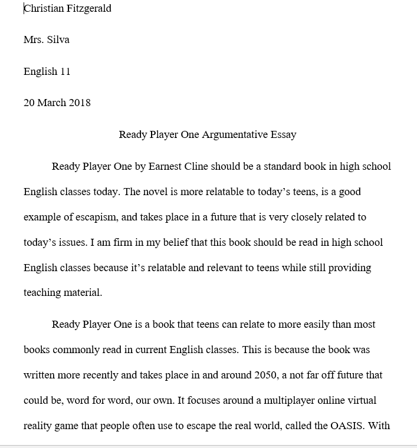
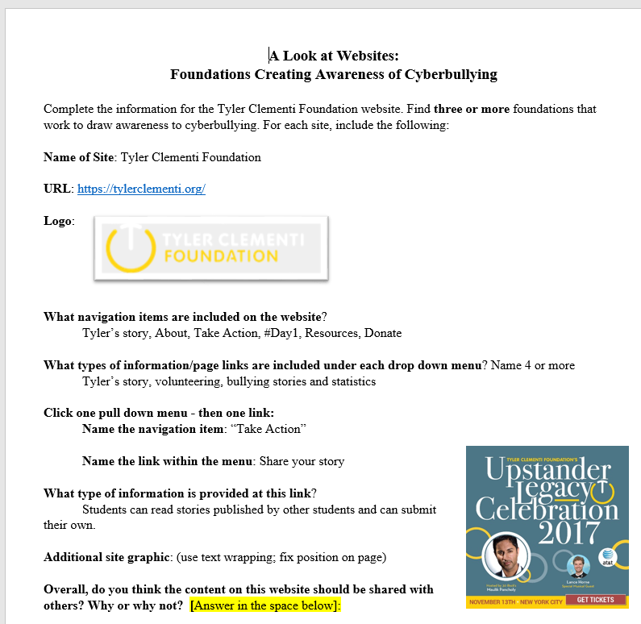

Writing/English Work:
Here are a few examples of professional writing and essays I've done along with some photoshop work. This includes:
- A photoshop project where I made multiple modifications to an image in Photoshop to learn the tools:
- An essay about Ready Player One and whether or not it should be read in high school english classes:

- A project where I evaluated current anti-cyberbullying websites and estimated how effective they were.
